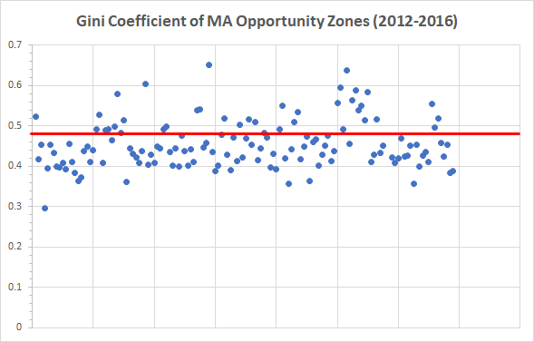
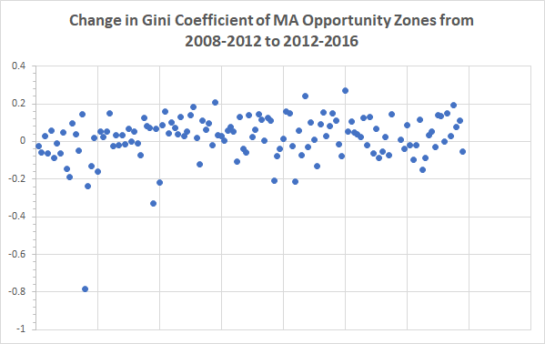

A handful of communities in MA opportunity zone tracks seem to be doing pretty well economically. Policymakers and residents have not traditionally thought of these areas as needing investment and revitalization, as they are all above $60,000 in median income. Is there a risk of investment dollars flowing to communities already flourishing eocnomically siphoning resources from the areas most in need?

Over half of MA opportunity zone census tract designations saw positive income growth in the last 8 years. This demonstrates a lack of focus on the most distressed communities. There is a risk that investors will prioritize investment in these growing communities accelerating gentrification and ignoring those with areas negative growth that would benefit most from investment.

The Gini Coefficient is a measure of inequality. The Coefficient is measured by comparing perfect income distribution with the income distribution in a given area. The closer the coefficient to zero, the lower the level of inequality in a given census tract.
The table below displays the Gini Coefficient of 136* Opportunity Zones in Massachusetts. Only 36 are above the state-wide average of 0.484, indicating lower-than-average inequality.
The table below displays the change in Gini Coefficient of a given Opportunity Zone in Massachusetts from 2008-2012 to 2012-2016. A positive change indicates that the Gini Coefficient increased which shows that the measure of inequality increased over time. The Gini Coefficient increased for 87 Opportunity Zones.
Data sources: Massachusetts Area Planning Council’s DataCommon and the United States Census Bureau .
Unemployment is high in Opportunity Zones. 74% of Opportunity Zones in Massachusetts have an unemployment rate higher than the state average of 6.8%. Areas of Boston, Springfield and other cities have highest levels of unemployment across all Opportunity Zones.
head here to look at Dana's test d3 visualization